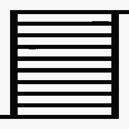
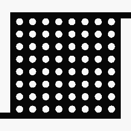
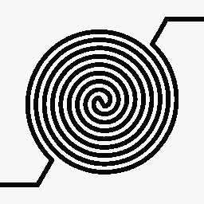
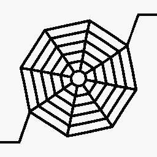

209 / 256 RAW PASS
- 37 connectivity failures
- 5 isolated-fluid failures
- 4 minimum-wall failures
Explore Infinite Designs with AI
Generation quality control
Five family conditions with 256 generated RAW SDF samples per family. Pass rates are reported before projection or geometry substitution.
209 / 256 RAW PASS

99.6%255 / 256 RAW PASS

100%256 / 256 RAW PASS

98.8%253 / 256 RAW PASS

97.3%249 / 256 RAW PASS
RAW model performance, conservative cleanup, and final release decisions are reported separately. Geometry validity is a pre-screening step—not a substitute for CFD/CHT validation.
Conditional diffusion pipeline
A 250-sample pilot is checked first. After release, 5,000 frozen SDFs are built for each of F0–F4: 25,000 training geometries in total.
A one-epoch smoke test precedes 50-epoch unified training. The family ID tells the same conditional diffusion model which channel grammar to learn.
The reverse process progressively removes noise and produces 256 native 256 × 256 RAW SDF samples for each family.
SDF > 0 becomes the fluid mask. Family-specific geometry gates report PASS or FAIL without projection or morphology; CFD/CHT remains a separate validation step.